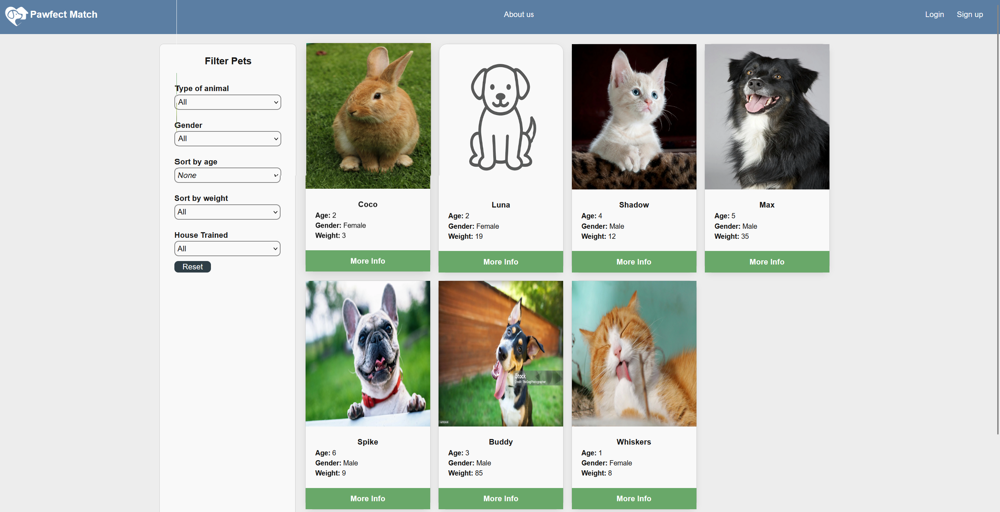
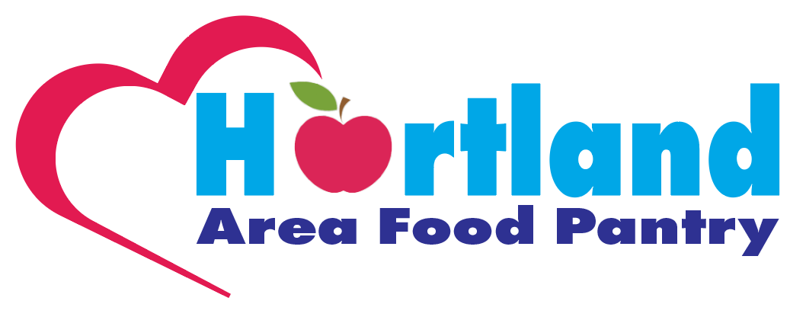
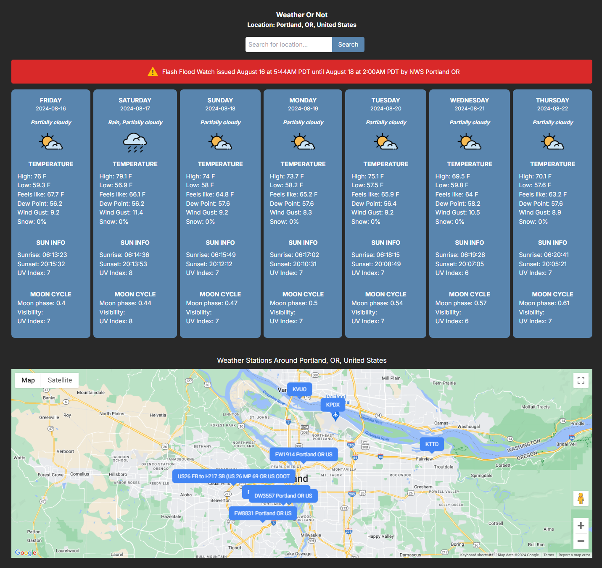
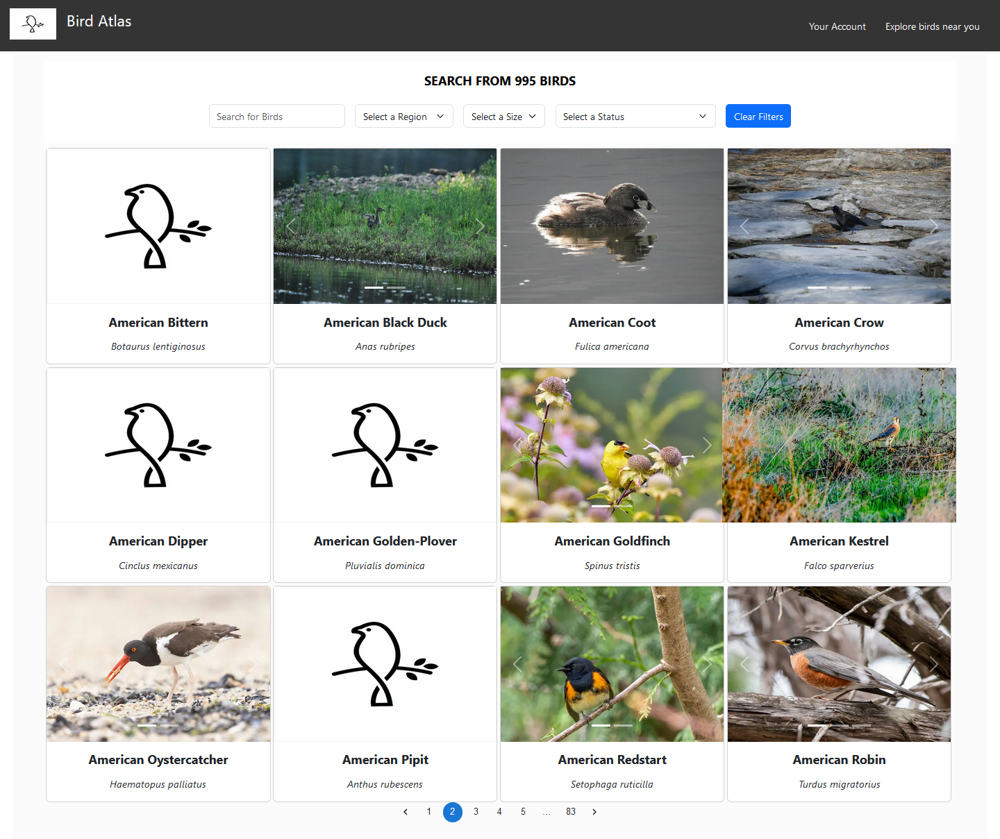
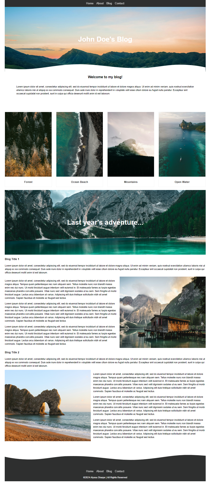

Projects
Pawfect Match
Built a full-stack Next.js adoption site featuring hashed user authentication, a dashboard for browsing and saving favorite pets, and an adoption form handled via Next.js API routes.
Deployed on Vercel with Neon (PostgreSQL) relational database for the backend, implementing secure authentication, dynamic data fetching, and a fast, user-friendly experience.
Languages/Frameworks/Tools: Next.js, TypeScript, Vercel, Neon(serverless Postgres), SCSS, HTML

Hartland Area Food Pantry Website
I led the design and development of a website for a food pantry in Hartland, WI, significantly enhancing its digital presence. By implementing strategic SEO techniques, I boosted user interactions by 63%, making it easier for the local community to access crucial support services with just a click. I collaborated closely with the volunteer team, to help conceptualize and execute a fresh, user-friendly design, ensuring the website effectively serves the pantry’s mission. Visit the site here!
Languages/Frameworks/Tools:JavaScript, SCSS, HTML, Wix

Weather or Not App
This Next.js application allows you to view the weekly weather anywhere in the world! It also includes information about high/low temps, cloud status, dew point, and more. This app uses the Visual Crossing Weather API found here.
Languages/Frameworks/Tools: Next.js, TypeScript, SCSS, HTML, Google Maps API
Github Link
Bird Atlas App
This React application allows you to search through a large index of North American birds. This app is similiar in style to the Pawfect Match app, although this app uses a 3rd party nuthatch API for the data instead of PostGres found here.
Languages/Frameworks/Tools: Next.js, TypeScript, JavaScript, SCSS, HTML, Nuthatch API
Github Link
Blog Template
This is a blog template project where I am focusing on practicing my front end development skills using HTML, SCSS, and JavaScript.
Languages/Frameworks: TypeScript, SCSS, HTML
Github Link